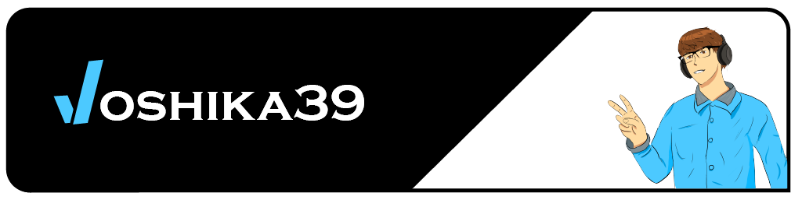

Hey there,

I'm Joshua (joshika39), a software engineer based in Budapest. I enjoy working across a broad spectrum of
technologies — from desktop and web development to IoT, the Apple ecosystem, and game engines like Unity, Unreal,
and Godot.
I’m also passionate about teaching and sharing knowledge. I regularly write articles and contribute to open source
projects to help others grow in their programming journey.
You’ll find a few highlighted projects below, and even more on my GitHub
profile.
Open Source Projects
Work Experience
-
Software Developer – Sportograf GmbH & Co. KG
(Full-time)
Nov 2023 – Present · Remote (Germany)
React
TypeScript
GitLab
CI/CD
Web Development
AWS
Amplify
AWS Lambda
AWS S3
AWS CloudFront
AWS DynamoDB
Elixir
-
Software Developer – XperiCAD Kft. (Contract)
Jun 2021 – Present · Remote (Hungary)
WPF
.NET
MVVM
Git
C#
-
Software Developer – DXC Technology (Contract)
May 2023 – Dec 2023 · Hungary
Python
Software Documentation
NestJS
Azure
Kubernetes
-
Head Instructor – Logiscool Ltd. (Full-time)
Oct 2019 – Aug 2023 · On-site (Serbia)
Python
Scratch
Game Design
Classroom Instruction
-
Intern – JUSOFT Hungary Ltd. (Internship)
May 2016 – Sep 2016 · On-site (Serbia)
.NET
SQL
Databases
C#
Maui
UWP
Education
-
Bachelor's Degree in Computer Science – Eötvös Loránd University
Sep 2022 – Aug 2025 · Budapest, Hungary
Angular
Web Engineering
Java
SQL
Data Structures
Algorithms
Software Engineering
Computer Networks
Operating Systems
Computer Architecture
Database Systems
-
High School Diploma in Computer Science – Bolyai Tehetséggondozó Gimnázium és Kollégium
Sep 2018 – Jul 2022 · Zenta, Serbia
Databases
Web Engineering
HTML
C++
Networking
Software Basics
Languages
- Hungarian (Native)
- English (Fluent)
- Serbian (conversational)
- Japanese (conversational)
Want to know more?
Read more about my background and story →